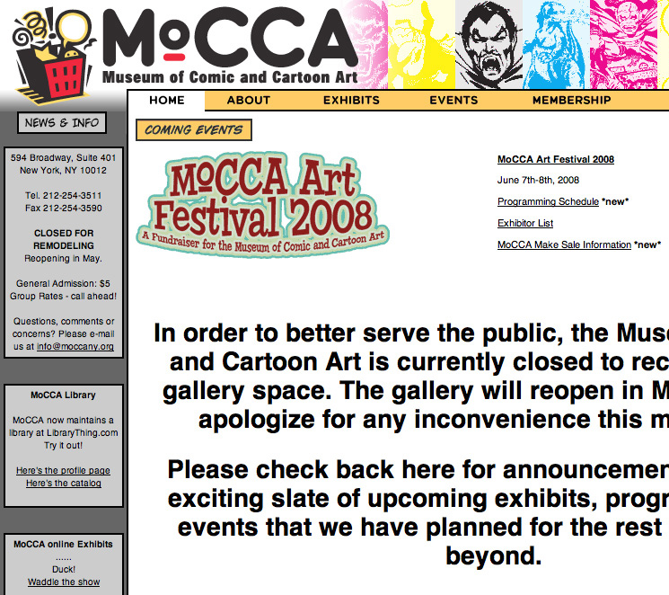
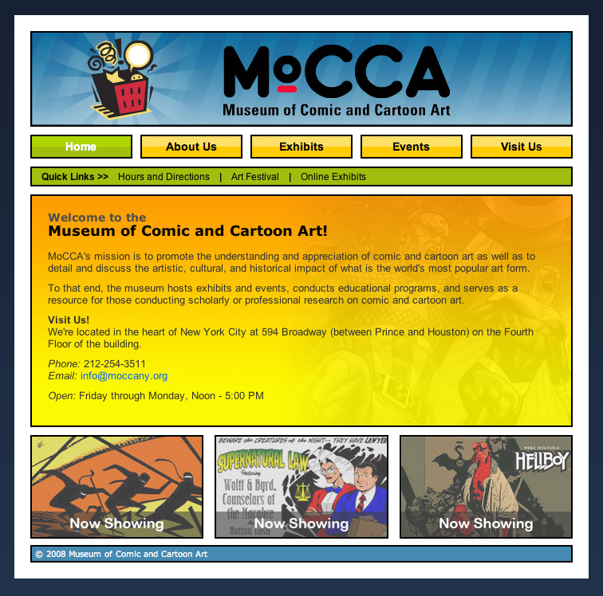

Redesign Case Study
Issues
Following extensive team feedback and usability testing, we found the following issues with the original site:
- Inconsistent and confusing navigation and site structure
- Lack of current content and engaging visual material
- Invalid markup and lack of attention to Section 508 (accessibility)
- Dull colors, uninteresting layout
- Little heirarchy of information

Solutions
Taking the user and team feedback into consideration, we developed the following solutions:
- Brought exciting and fun colors to the site
- Created clean and symbolic comic book style layout
- Integrated flash and javascript to technologically update the site
- Site is now valid xhtml and css
- Passes Section 508 standards for accessibility
- Information architecture revamped and easier to understand, more consistent
- Current exhibits on home page
- Wealth of art and information accessible within three clicks
- Identified main reasons a user would visit site and emphasized those throughout
- Solid heirarchy of information
